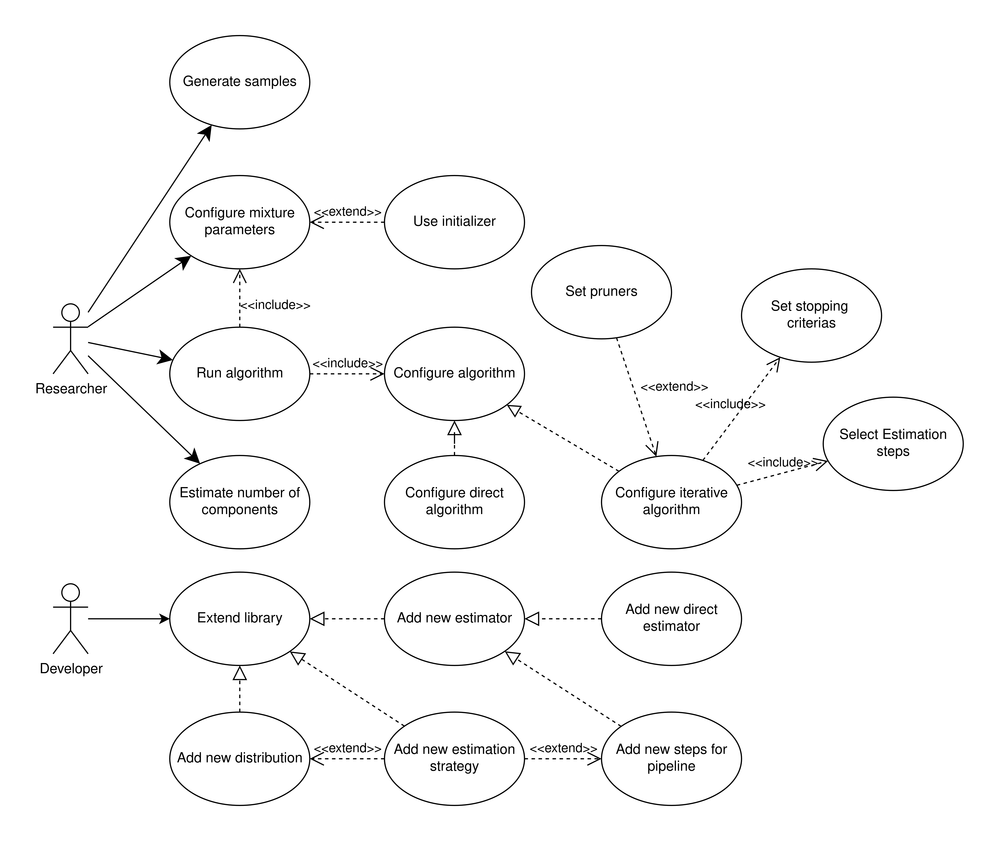

Use-case диаграмма#
Диаграмма вариантов использования (Use-case diagram) иллюстрирует основные действия, которые исследователь (Researcher), разработчик (Developer) могут выполнять с помощью библиотеки.
{kind=link}

Researcher (Исследователь)#
Основной пользователь системы. Это может быть аналитик данных, ученый или инженер, которому необходимо проанализировать данные для выявления лежащих в их основе скрытых групп (компонент). Его цель — применять готовые алгоритмы, настраивать их, запускать и интерпретировать результаты, не внося изменений в исходный код библиотеки.
Варианты использования (Use Cases):
Generate samples (Сгенерировать выборку):
Описание: Исследователь может создать синтетический набор данных из смешанной модели с заранее известными параметрами. Это полезно для тестирования алгоритмов, понимания их поведения и проверки корректности получаемых результатов.
Run algorithm (Запустить алгоритм):
Описание: Это центральное действие, в ходе которого исследователь применяет настроенный алгоритм к своим данным для оценки параметров смешанной модели.
Отношение
includeк “Configure algorithm”: Перед запуском любой алгоритм должен быть обязательно сконфигурирован.Отношение
includeк “Configure mixture parameters”: Перед запуском алгоритма необходимо создать начальное приближение для смеси.
Configure algorithm (Настроить алгоритм):
Описание: Этот обобщенный вариант использования представляет настройку выбранного оценщика. Он реализуется через более конкретные действия, такие как Configure direct algorithm или Configure iterative algorithm.
Configure iterative algorithm (Настроить итеративный алгоритм):
Описание: Если исследователь выбирает итеративный алгоритм, такой как EM, он настраивает его поведение.
Отношение
includeк “Select Estimation steps”: Ключевой частью настройки является определение последовательности шагов, выполняемых на каждой итерации (например, E-шаг и M-шаг).Отношение
extendот “Set stopping criterias”: Исследователь может задать условия, при которых итеративный процесс должен завершиться. Например, достижение максимального числа итераций или сходимость (когда правдоподобие перестает значительно увеличиваться).Отношение
extendот “Set pruners”: Опционально можно включить стратегии для автоматического удаления незначимых компонент в процессе обучения (например, тех, чей вес упал ниже порогового значения).
Configure direct algorithm (Настроить прямой алгоритм):
Описание: При использовании простого, неитеративного оценщика (например, основанного на методе моментов), исследователь задает его гиперпараметры.
Configure mixture parameters (Настроить параметры смеси):
Описание: Исследователь определяет начальное состояние модели перед запуском алгоритма оценки. Это может включать в себя ручное задание числа компонент и их начальных параметров.
Отношение
extendот “Use initializer”: Чтобы упростить этот шаг, исследователь может опционально использовать автоматическую стратегию инициализации (например, на основе кластеризации) для получения качественных стартовых значений параметров.
Estimate number of components (Оценить число компонент):
Описание: Исследователь может использовать готовые алгоритмы для выбора оптимального количества компонент в смеси для заданного набора данных.
Developer (Разработчик)#
Продвинутый пользователь, обладающий навыками программирования. Его основная задача — не просто использовать библиотеку, а расширять ее функциональность для решения нестандартных задач или для внесения вклада в развитие проекта.
Варианты использования (Use Cases):
Extend library (Расширить библиотеку):
Описание: Это основной, высокоуровневый вариант использования для разработчика. Он представляет общую цель по добавлению в фреймворк новых возможностей, таких как поддержка новых распределений, алгоритмов или их составных частей.
Отношение
generalize: Этот абстрактный use case реализуется через более конкретные действия, описанные ниже, такие как Add new distribution, Add new estimator и Add new estimation strategy.
Add new distribution (Добавить новое распределение):
Описание: Разработчик добавляет поддержку нового типа непрерывного распределения. Для этого он создает класс, наследуемый от
ContinuousDistribution, и реализует его абстрактные методы.Отношение
extendот “Add new estimation strategy”: Процесс добавления нового распределения может быть опционально расширен добавлением для него специальной стратегии оценки параметров. Например, если для нового распределения существует аналитическое решение для оценки через Q-функцию, разработчик может реализовать его как новую стратегию, используя декоратор@singledispatch.
Add new estimator (Добавить новый оценщик):
Описание: Разработчик создает совершенно новый алгоритм (оценщик) для оценки параметров смеси. Это может быть как итеративный алгоритм (например, на основе
Pipeline), так и прямой. Для этого создается класс, реализующий интерфейсBaseEstimator.Отношение
generalize: Этот use case является обобщением для более конкретных реализаций, таких как Add new direct estimator (добавление прямого оценщика) или Add new steps for pipeline (добавление новых шагов для классаPipelineчерез реализацию интерфейсаPipelineStep)
Add new estimation strategy (Добавить новую стратегию оценки):
Описание: Разработчик реализует новую логику для вычисления параметров отдельной компоненты смеси в рамках существующей стратегии оценки параметров (например, для оценки через метод моментов). Это позволяет оптимизировать вычисления для конкретных распределений, избегая численной оптимизации общего вида.
Add new steps for pipeline (Добавить новые шаги для пайплайна):
Описание: Разработчик создает новый, переиспользуемый блок для итеративного
Pipeline. Это может быть альтернативная реализация Е-шага, М-шага (например, использующая новую стратегию) или совершенно новый тип шага.Отношение
extendот “Add new estimation strategy”: если шаг занимается оценкой параметров, необходимо добавить стратегии для этого шага.